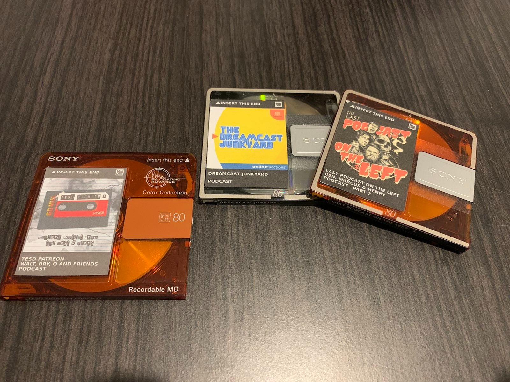
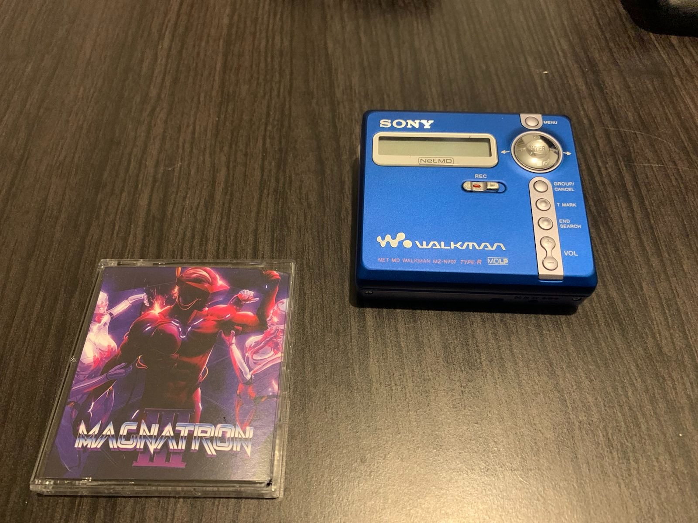
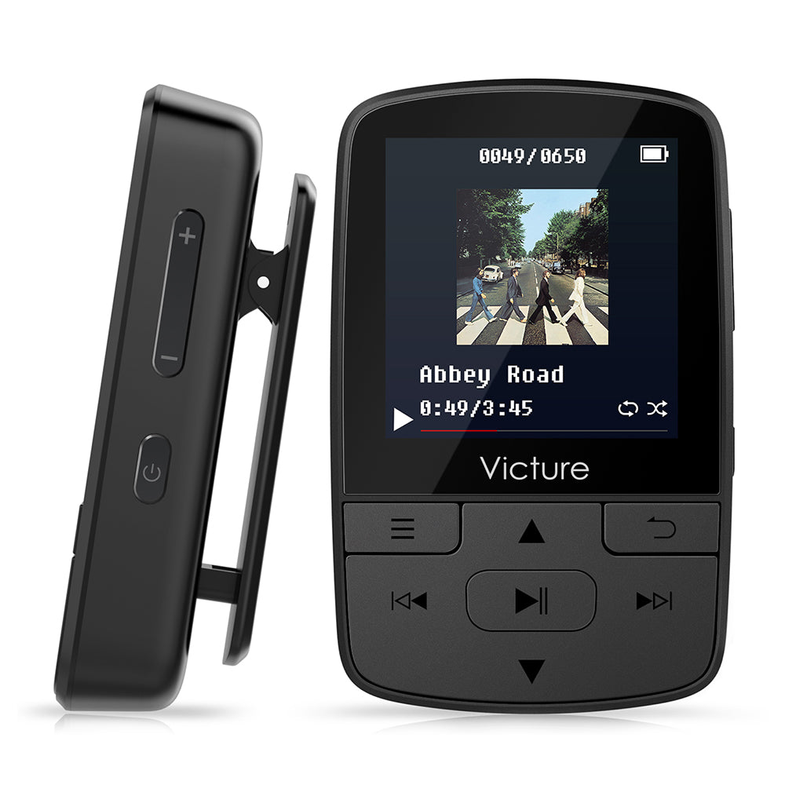
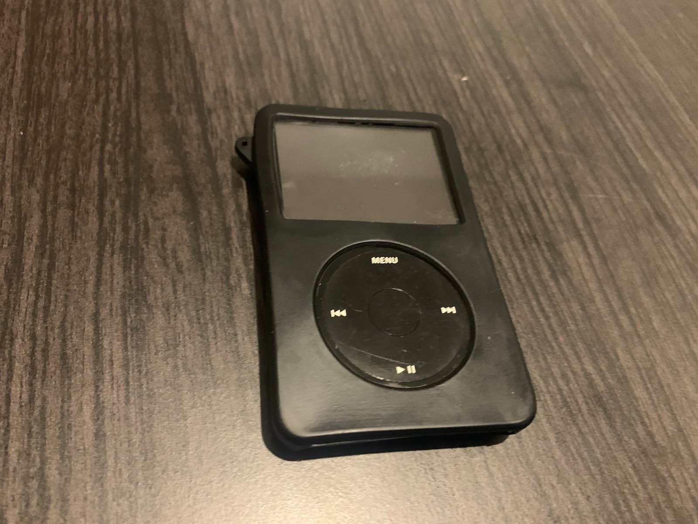

It’s the 2020s, we continue to become more connected that we’ve ever been, and I hate it! I don’t have the self-control needed to handle these always-on devices. It’s awful. They’re all so incredibly powerful and give so much in terms of information. I, however will be on reddit or hackernews pretending I’m productive reading about someone else’s terrificly productive project. I’ve lived with my brain enough to know, uncontrolled smartphones aren’t really for me. I’ve written elsewhere how my smartphone is basically a dumb one, but I’ve tried to replace the various pieces of value my phone delivers with more dedicated devices.
Today, it’s all about Podcasts and Audiobooks. There’s Spotify, Overcast, Audible and all these other great Podcast apps, but sigh, they all involve the black rectangle of addictiveness. I’ve been toying with Digital Minimalism on and off since reading Cal Newports books and actually long before. I wanted more dedicated devices as a response to phone’s just doing everything. I didn’t want to constantly feel around for a single device to entertain me in limitless ways. So lets see if we can find a reasonable replacement.
Now I am almost constantly listening to either audiobooks or Podcasts. With two kids, audio is about the best bet you’ll get in terms of engaging drama that won’t be interrupted within ten minutes. There are some excellent Podcasts dramas too. Blackout, and We’re Alive are just two(especially if you’re into dystopias like myself). So we need a way to listen to some Podcasts. What are the options available outside of the black rectangles?
So I am a big fan of Minidiscs, I love them as a format and I love that my guilty please audio listening genre(synthwave!) are still releasing albums on this format. It’s terrific. There’s a pretty good electron app to manage tracks, and it’s just such an enjoyable and tactile format. So lets give Podcasts a try on this thing.
I gave Podcasts on Minidiscs a real go, even printed out per-podcasts discs covers, look how nice they look!

But this was a total disaster. The limited audio length was an absolute killer. Trying to split podcasts and audiobooks amongst multiple discs was painful. The write speeds being so slow, by the time a podcast was written to the disc, it felt like the next one would be released. It was terrible, I love Minidiscs, but no sane person could do this. Any requirement to that needs frequent writes to a Minidiscs are doomed to fail. Music and albums would be fine, but anything regularly needing writing, no change. Learn from my lessons(or maybe you were smart enough to not do stupid things in the first place)!

Okay, let's go from year 1992 to 1997 and try one of those futuristic MP3 players. I decided to pick up a Victure Bluetooth MP3 Player and yeah, it worked, but the experience was painful. Getting files on was dead-easy, it just mounted as a filesystem. So the minidisc write problems are solved, great. However, the experience of navigating and listening to Podcasts left a LOT to be desired. These things don’t support podcasts and the UI is just terrible on this tiny screen. Without Podcast support, there’s no way to resume anything, and hopping between Podcasts or pausing and leaving the device sucks. With serious consequences, this maybe could work, but I feel like this would be too painful for me not to just revert back to the black rectangle of distractedness. MP3s are good though, this format might just have a future.

This time I opted for a heavy-weight. I didn’t want to mess around with another cheaply produced modern MP3 player. If I was going MP3 I wanted it to be the Rolls-Royce of relatively cheap mp3 players. Perhaps made by the most valuable company on the planet at a time when it’s near Jesus-like leader was at the peak of his powers. With that in mind, I opted for an iPod Video 5th generation and in short, Jobs and all those involved produced an almost perfect product. It’s well-made product, really, really well-made. Especially considering it’s still going strong 20 years after its initial release. I’m putting it through it’s paces too, I’ve been using this daily for 6 months, and it’s held up really well.
It supports Podcasts and Audiobooks out of the box, has resume support and a really nice, easy to use UI. It’s staggering how good this UI is, all things considered. Time has not seriously improved or developed MP3 products at all. I even have Rockbox installed on my iPod(as I just assumed it would be better), but it genuinely is a poorer experience. No Podcast support killed it out of the box for me, and generally it just seems like it has a number of meaningless bells and whistles but nothing to improve the actual core offering of the MP3 player.
In terms of a serious evaluation though, I’ve used this iPod for around 6 months now, I listen to Podcasts/Audiobooks on it daily, from a variety of topics. If you’re looking for a (currently) inexpensive and also easy way to manage and listening to Podcasts on the go, I cannot recommend anything better, but if you have any better suggestions, do reach out, and I’ll happily add them onto the bottom of this post.
There are some limitations to this, I obviously need to manage downloading Podcast and then transfer them to my iPod, but generally that’s sort of done in the background while I’m doing other things. I’ll write up a post on managing an iPod here. There’s some effort involved, but once it’s setup it’s all good.
